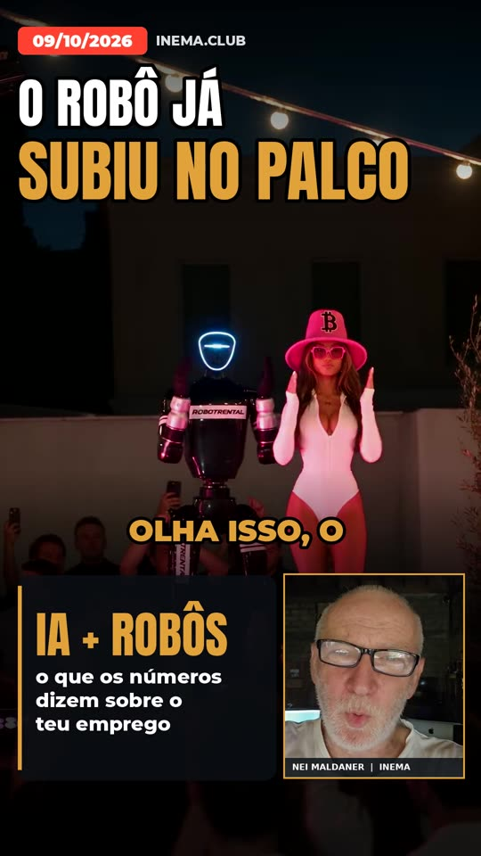
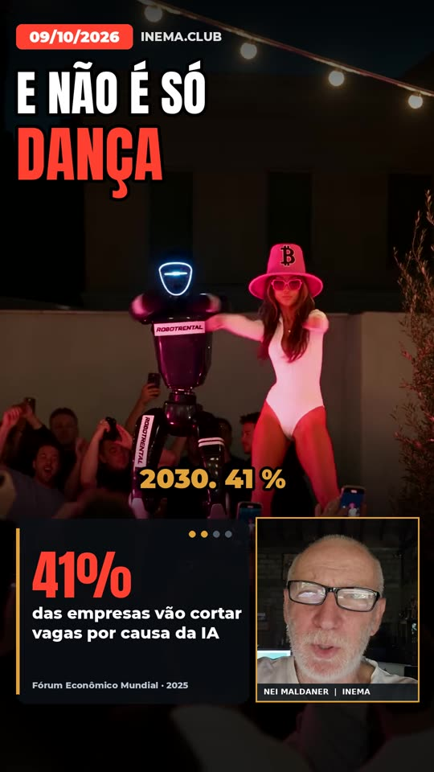
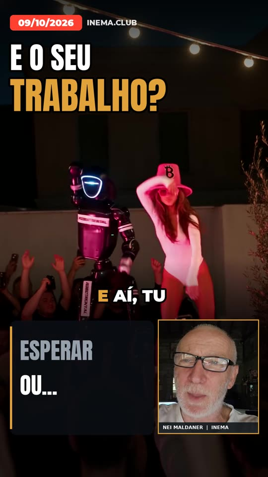
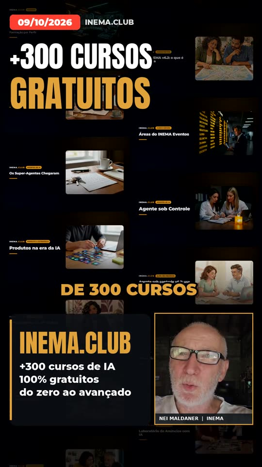

Cole o link de um reel. O vídeo original passa com a música baixa, o seu avatar comenta no canto, os números entram com a fonte e o fim chama para os cursos grátis.
O reelcomenta é uma ferramenta de linha de comando que pega o link de um reel, TikTok ou Short de outra pessoa e monta um vídeo vertical seu comentando aquele assunto. O vídeo original continua passando, com a música dele baixa. O seu avatar do HeyGen fala num canto da tela, os números da sua pesquisa aparecem num painel com a fonte, e o vídeo termina com uma pergunta e a chamada para os cursos gratuitos do inema.club. É para quem produz conteúdo e quer surfar num vídeo que já está circulando, sem gravar nada. Precisa de Python, ffmpeg, uma conta HeyGen com o seu avatar e dos projetos cardshorts e explicavideos.
Nasceu do vídeo "robô no palco" (09/10/2026): um robô dançando com uma dançarina virou gancho para falar de empregos substituídos por IA e robôs.
A primeira passada é o vídeo inteiro; depois o melhor trecho volta em câmera lenta enquanto os números entram. A música original fica baixa e abaixa mais quando você fala.
Cada número entra num painel com contador, na palavra exata em que o avatar fala dele, e leva a fonte embaixo (relatório e ano).
O avatar entra pelo estúdio do HeyGen, recortado no rosto automaticamente, com moldura e nome, sem tapar o vídeo.
Tudo fica numa pasta por edição em edicoes/. O único texto que você escreve é o roteiro.yaml.
Quadro 0 já cheio: data dd/mm/aaaa, manchete grande e o reel rodando.
3 a 4 cartões com contador animado, rótulo curto e fonte.
"Vai ficar esperando ou vai se qualificar?" — "ESPERAR" é riscado na hora da virada.
Mosaico com as capas reais dos cursos do portal rolando, e o cartão final do INEMA.CLUB.
Roda local. A única coisa de fora é o estúdio do HeyGen, usado pela sua assinatura no navegador.
Python 3 com Pillow, PyYAML e OpenCV (recorte do rosto), ffmpeg e yt-dlp.
pip install pillow pyyaml opencv-python yt-dlp sudo apt install ffmpeg
Transcrição local com tempo por palavra e envio para o Telegram vêm do cardshorts.
git clone https://github.com/inematds/cardshorts
O explicavideos traz o robô do estúdio do HeyGen (Playwright com o seu perfil logado) e a leitura de status.
# caminhos por variável, se forem outros export RC_EXPLICAVIDEOS=~/projetos/explicavideos export RC_PERFIL_HEYGEN=~/.cache/inemaccbot/perfil-heygen
No Claude Code ou no Codex, a skill reelcomenta faz todos os passos quando você manda o link. À mão, é assim:
Cria a pasta da edição, baixa o vídeo, faz uma folha com 12 quadros, transcreve o áudio e deixa o modelo de roteiro.
git clone https://github.com/inematds/reelcomenta && cd reelcomenta python3 reelcomenta.py novo "https://www.instagram.com/reel/DeQ62SgBblE/" --id robo-trabalho
De 3 a 4 números com fonte e ano. A fala tem de 550 a 750 caracteres, com ano e número por extenso. Cada cartão entra numa palavra da fala (a âncora).
# edicoes/2026-10-09-robo-trabalho/roteiro.yaml (trecho) fala: | Olha isso. O robô já divide o palco com a dançarina. ... cartoes: - {ancora: noventa, numero: "{} MILHÕES", conta: 92, rotulo: "de empregos eliminados\naté 2030", fonte: "Fórum Econômico Mundial · 2025"} pergunta: {ancora: pergunto, virada: qualific, riscado: ESPERAR, depois: ["OU SE", "QUALIFICAR"]} cta: {ancora: inema, linha1: "+{cursos_100} CURSOS", linha2: GRATUITOS}
Desenha as telas com tempo estimado sobre quadros do reel, antes de gastar a fila do avatar.
python3 reelcomenta.py previa edicoes/2026-10-09-robo-trabalho # → previa.jpg
Só roda com o arquivo de aprovação. Manda a fala ao estúdio do HeyGen, confere o status e baixa o MP4 (de 30 min a 1 h na fila).
echo "aprovado por Nei em 09/10/2026" > edicoes/2026-10-09-robo-trabalho/avatar/APROVADO_HEYGEN python3 reelcomenta.py avatar edicoes/2026-10-09-robo-trabalho
A montagem para se a fala ouvida divergir do roteiro. A conferência faz uma folha com 10 quadros e mede o volume.
python3 reelcomenta.py montar edicoes/2026-10-09-robo-trabalho # → video.mp4 python3 reelcomenta.py conferir edicoes/2026-10-09-robo-trabalho # → conferencia.jpg python3 reelcomenta.py enviar edicoes/2026-10-09-robo-trabalho "legenda"
Um robô dançando num palco virou gancho para falar de empregos substituídos por IA e robôs. 37 segundos:
| Na tela | Fonte |
|---|---|
| 92 milhões de empregos eliminados até 2030 | Fórum Econômico Mundial, Future of Jobs 2025 |
| 41% das empresas vão cortar vagas por causa da IA | Fórum Econômico Mundial, Future of Jobs 2025 |
| 1 em 5 empresas vai usar IA para cortar metade da gerência média | Gartner, previsão para 2026 |
| 542 mil robôs instalados nas fábricas em 2024 | IFR, World Robotics 2025 |
| +300 cursos gratuitos | catálogo do inema.club |




A primeira edição validou o formato. Próximos passos: